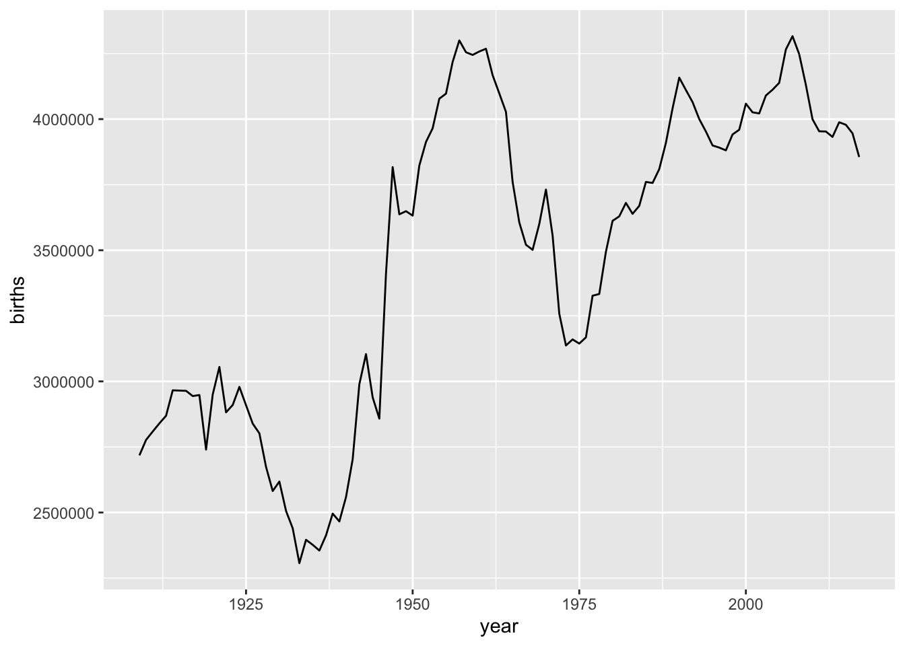

Chapter 9 A Case Study of Social Networks from Twitter Conversations
This case study focuses on analyzing social networks from Twitter conversations. Three different types of networks were identified and analyzed: Mention Network, Message Network, User-Sources Network.
9.0.1 Mention Network
A mention network is a way to understand how Twitter users interact with each other. Each Twitter user is represented as a point in the network. When one user mentions another user in a tweet, a line is drawn from the mentioning user to the mentioned user. This line represents the interaction between the two users. The more often a user mentions another user, the stronger the line will be between them. The mention network can help researchers analyze patterns of communication on Twitter, identify important users or “hubs” in the network, find groups of users who tend to interact with each other frequently or “communities,” and categorize user accounts based on their interactions with others.
9.0.2 Message Network
A Twitter message network is a way to analyze how Twitter users communicate with each other using replies. Each Twitter user is represented as a point in the network. When one user sends a message to another user in reply to their tweet, a line is drawn from the sender to the receiver. This line represents the interaction between the two users. The more often a user sends a message to another user, the stronger the line will be between them. The message network can help researchers analyze patterns of communication on Twitter, identify important users or “hubs” in the network, find groups of users who tend to interact with each other frequently or “communities,” and categorize user accounts based on their interactions with others. It is called a directed network because the lines have an arrow that points from the sender to the receiver, indicating the direction of the interaction.
Here’s an example R code that uses the rtweet package to collect the most recent tweets containing the #ChatGPT hashtag, creates a mention network, performs some basic network analysis, and visualizes the network using the igraph package:
library(rtweet)
library(igraph)
library(ggplot2)
library(tidyverse)
# search for tweets containing #ChatGPT and retrieve up to 1000 tweets
tweets <- search_tweets("#ChatGPT", n = 1000)##
Downloading [=======>---------------------------------] 20%
Downloading [===========>-----------------------------] 30%
Downloading [===============>-------------------------] 40%
Downloading [===================>---------------------] 50%
Downloading [========================>----------------] 60%
Downloading [============================>------------] 70%
Downloading [================================>--------] 80%
Downloading [====================================>----] 90%
Downloading [=========================================] 100%# extract mentions_screen_name column and drop NAs
mentions <- tweets %>%
select(screen_name, mentions_screen_name) %>%
filter(!mentions_screen_name == "NA")
# separate multiple mentions_screen_name into separate rows
mentions <- mentions %>%
separate_rows(mentions_screen_name, sep = ",") %>%
filter(!mentions_screen_name == "")
# create mention network data frame
mentions_net <- mentions %>%
group_by(screen_name, mentions_screen_name) %>%
summarize(weight = n()) %>%
ungroup()## `summarise()` has grouped output by 'screen_name'. You can override using the
## `.groups` argument.# rename columns to source and target
colnames(mentions_net)[1:2] <- c("source", "target")
#export the mention network
write.csv(mentions_net, "~/Jenny/teaching/329/chatgpt_mention.csv", row.names=FALSE)
# create directed graph
mentions_graph <- graph_from_data_frame(mentions_net, directed = TRUE)
#shows the number of nodes
vcount(mentions_graph)## [1] 698#shows the number of edges
ecount(mentions_graph)## [1] 529#let's count average link weight
ecount(mentions_graph)/vcount(mentions_graph)## [1] 0.7579#show density
edge_density(mentions_graph, loops = FALSE)## [1] 0.001087#Centrality
options(scipen = 999) # turn off scientific notation for all variables
options(digits = 4) # define the digits
# calculate centrality measures
indegree <- data.frame(name = V(mentions_graph)$name, indegree = degree(mentions_graph, mode = "in"))
outdegree <- data.frame(name = V(mentions_graph)$name, outdegree = degree(mentions_graph, mode = "out"))
closeness <- data.frame(name = V(mentions_graph)$name, closeness = closeness(mentions_graph, mode = "total"))
betweenness <- data.frame(name = V(mentions_graph)$name, betweenness = betweenness(mentions_graph, directed = TRUE, normalized = TRUE))
eigenvector <- data.frame(name = V(mentions_graph)$name, eigenvector = eigen_centrality(mentions_graph, directed = TRUE)$vector)## Warning in eigen_centrality(mentions_graph, directed = TRUE): At core/centrality/
## centrality_other.c:348 : Weighted directed graph in eigenvector centrality.# combine into a single dataframe
centrality_df <- merge(indegree, outdegree, by = "name", all = TRUE)
centrality_df <- merge(centrality_df, closeness, by = "name", all = TRUE)
centrality_df <- merge(centrality_df, betweenness, by = "name", all = TRUE)
centrality_df <- merge(centrality_df, eigenvector, by = "name", all = TRUE)
#visualize the mention network
library(ggraph)
# Create undirected graph
mentions_graph_undirected <- as.undirected(mentions_graph, mode = "collapse")
# Calculate Louvain communities
communities <- cluster_louvain(mentions_graph_undirected)
# Color palette for communities
community_colors <- rainbow(max(membership(communities)))
# Set community colors for each node
V(mentions_graph)$community <- membership(communities)
# Visualize network with community labels
ggraph(mentions_graph, layout = "fr") +
geom_edge_link(aes(width = E(mentions_graph)$weight), color = "gray", alpha = 0.5) +
geom_node_point(aes(size = V(mentions_graph)$indegree, color = factor(community), alpha = 0.5)) +
scale_size_continuous(range = c(0.5, 2)) +
scale_color_manual(values = community_colors) +
geom_node_text(aes(label = name, size = V(mentions_graph)$indegree, color = factor(community)), check_overlap = TRUE, repel = TRUE, point.padding = unit(0.5, "lines")) +
labs(title = "Mention Network of #ChatGPT (04/06/2023)", subtitle = "Jenny Jiang") +
theme(plot.title = element_text(hjust = 0.5, size = 10, face = "bold"), plot.subtitle = element_text(hjust = 0.5, size = 7, face = "bold"))## Warning: ggrepel: 698 unlabeled data points (too many overlaps). Consider
## increasing max.overlaps
In the community detection process in the above example, the cluster_louvain is a function in the igraph package in R that performs community detection using the Louvain method. Community detection is the process of identifying groups of nodes in a network that are densely connected to each other but sparsely connected to other groups. The Louvain method is an iterative algorithm that optimizes the modularity score of a network partition, which measures the quality of the division of the network into communities. The Louvain method is one of the most widely used community detection methods and is particularly useful for large-scale networks.
To produce more visually appealing visualizations for large-scale networks, it is recommended to utilize specialized network visualization and analysis tools like Gephi. Here’s a link to download and install Gephi: https://gephi.org/users/download/
Gephi is a free and open-source network visualization and analysis tool that allows you to create complex and aesthetically pleasing network visualizations. It provides a user-friendly interface and a variety of tools for network analysis, including measures of centrality, clustering, and community detection.
For larger networks, Gephi can be more efficient and powerful than using R packages such as igraph and ggplot2. However, it does require some learning curve and familiarity with network analysis concepts.
This is the optimized network visualization generated by Gephi:
 Well, look at this fancy visualization! It seems like the recent ChatGPT conversations have sparked a whole bunch of mini conversation clusters. And it looks like @CerfiaFR, a French research center that’s all about artificial intelligence, machine learning, and cognitive science, performs as a hub of a big group of chatty folks talking about #ChatGPT.
Well, look at this fancy visualization! It seems like the recent ChatGPT conversations have sparked a whole bunch of mini conversation clusters. And it looks like @CerfiaFR, a French research center that’s all about artificial intelligence, machine learning, and cognitive science, performs as a hub of a big group of chatty folks talking about #ChatGPT.
9.0.3 User-Source Network
A user-source Twitter network is a type of undirected network that involves two types of nodes - users and sources. The links between these nodes are created based on the co-occurrence of users and the source of their tweets. For example, if a user sends a tweet from a particular source (e.g. Twitter Web App, Hootsuite, Tweetdeck), a link is created between the user and the source. The more often they appear together, the stronger the link between them.
This type of network can be used to explore the relationships between users and the sources they use to tweet. By analyzing the network, we can find and analyze which users use which clients (or sources). This information can be useful for understanding how users interact with different sources and for categorizing user accounts.